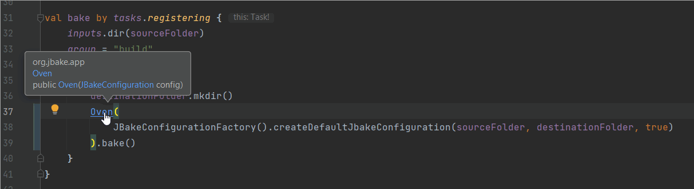
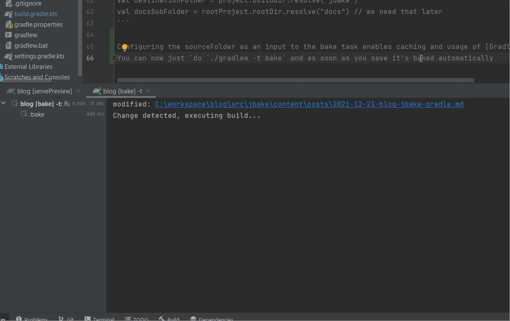

How to create a blog with JBake and Gradle
And Git and GitHub Pages
Disclaimer: There are probably ways to create a blog with or without a static site generator that a lot of people will
see as more beginner friendly and better documented and supported than what I describe here. For whomever likes to work with the JVM ecosystem and Git, my way might be interesting.
Template
Assumption: You know the basics of html and css and what web servers do.
The most important part of your blog is neither the bake tool nor the build tool but the template. Now I have said it
and I am a developer. So my template can be found on html5up, just as some other nice ones, but of course you can
chose an arbitrary one from the internet, as long as it's suitable for a static site.
Git
Initialize your git project and use Java's default .gitignore file. You will need a foder named docs under your root
folder, so that GitHub Pages knows where to find your pages. For now, create an empty index.html file within that folder and check in your first working version.
GitHub Pages
Create a new Repository in your GitHub account, name it exactly like your username, as also described here.
Go to settings -> Pages and chose branch: master and folder: /docs so that your pages are goingto be served from this very folder on your master branch.
When you push your new project containing an index.html file, you can already visit it on https://yourusername.github.io. From now on, you only have to do some release, which means you need to update
the contents of the docs folder and push it on the master branch.
Gradle Part 1
Assumption: You have Java installed (at least 8, better is 11 or higher) or you know how to install it. You can also use JBake standalone as a docker image as described here
and then your only dependency would be Docker.
Initialize gradle within your root folder. You can do so by either installing an arbitrary gradle version on your machine and call gradle init on the cmd, or by using any gradle repository as a starting point. You could use mine
and delete the docs and src folders. This way, you don't need to install gradle. Afterwards, you can use the executables to launch gradle commands.
Assumption: You use Kotlin as your language for gradle and you use IntelliJ idea (community edition is sufficient, it's free and open source)
Now you need to add JBake as a dependency to the dependencies of your gradle build script (not to the application dependencies). You do so by adding
buildscript {
dependencies {
classpath("org.jbake:jbake-core:2.6.7")
}
}
simply on the top level. Now you can use JBake's classes from within your build.gradle.kts. Remeber to reload your
Gradle project in IntelliJ after adding the dependency, in order to make auto completion in the script file work:

When you write the task definition like in the image above, you only need to create the default JBake source folder src/jbake
and declare source and destination folders above your task definition like so
val sourceFolder = project.rootDir.resolve("src/jbake")
val destinationFolder = project.buildDir.resolve("jbake")
val docsSubFolder = rootProject.rootDir.resolve("docs") // we need that later
Configuring the sourceFolder as an input to the bake task enables caching and usage of Gradle's built-in functionality of doing things continuously.
You can now just do ./gradlew -t bake and as soon as you save it's baked automatically

I am using a full blown uncached JBake build, which takes not even two seconds to complete and is fast enough for me. There are some caching mechanisms that would probably dramatically speed up single document changes, but I heaven't tried that
and indeed if I had any more performance requirements, I would rather use the JBake executable and the built-in watch mode that also includes a web server (just after I found out that to be faster of course ;) ).
IntelliJ local web server
IntelliJ has a built-in web server, so navigating to the build/jbake/posts/foo.html file and clicking open either in internal or in default browser will give you a preview of your site immediately. The page can automatically be reloaded on changes,
but this seems to only work when you a) either edit the html file directly (which is not practical), or when you b) refocus IntelliJ. So you can have a second window with the browser of your choice previewing your page and you need to CTRL-Tab CTRL-Tab
in order to have the browser update the page. Odd, but I didn't find a way around that.
Release workflow
So the simplest workflow would be to just generate the site into /docs for preview and production. Then write your content and whenever you think you're done add the content, generate the site, add everything with git add --all, git commit and
git push and done. You would need to be careful with work in progress commits, where you changed the content, but don't want to publish the unfinished compiled site. And you need to take care of manually cleaning up the generated content when you
decide this is my release now. Releases may be tagged manually so that you can rollback or find out where you made a mistake in the past. Would be better to do some more sophisticated things here and Gradle can help.
First, we only generate into /build/jbake. Build is a working dir for Gradle and is not checked into version control, so we never push a work in progress site. Second, we write a small task that generates into the /docs folder, that indeed get checked in.
This task can either bake into the build dir and copy the content to docs, or it can clear docs and generate into docs. It's close, but not exactly the same. I chose the former.
The gradle release plugin is the de-facto standard of how you do
releases with Gradle and is a very suting abstraction over the problem of doing a release of something. After application, your build contains a release task and some hooks.